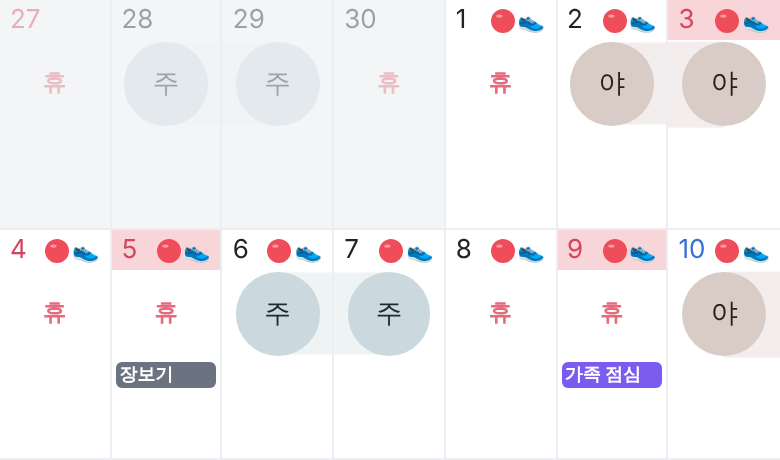
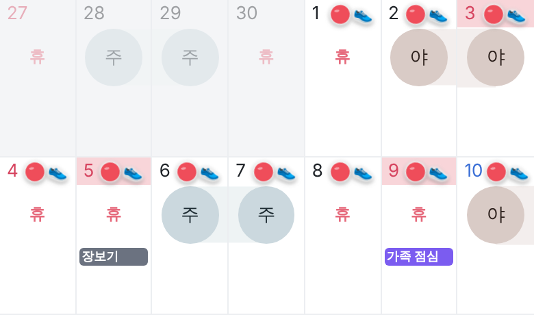
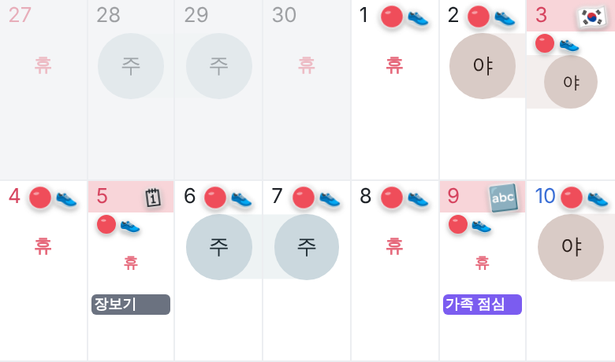
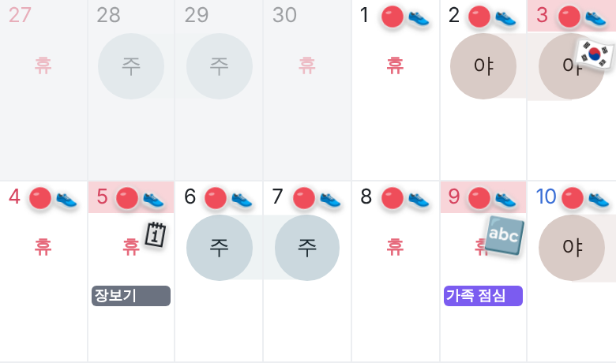

공휴일 칸 · 글자와 스티커가 겹치면
실제 달력의 3일(개천절) · 5일(대체공휴일) · 9일(한글날)이에요. 이 날들에 약 · 운동 스티커 2개를 붙였고, 5일 · 9일에는 메모도 있어요.
① 지금공휴일 이름("개천")이 스티커에 밀려 안 보여요. 분홍 바탕으로만 공휴일인 걸 알 수 있어요
② 스티커 외형만 바꿈이름은 여전히 숨고, 스티커만 또렷해져요
③ 명절 스티커를 날짜 줄에이름 자리에 명절 스티커 · 내 스티커는 아래 줄로 내려가요
동그라미가 조금 작아져요
④ 명절 스티커를 칸 모서리에 크게다이어리에 붙인 느낌이지만 근무 동그라미 · "휴" 글자와 겹쳐요